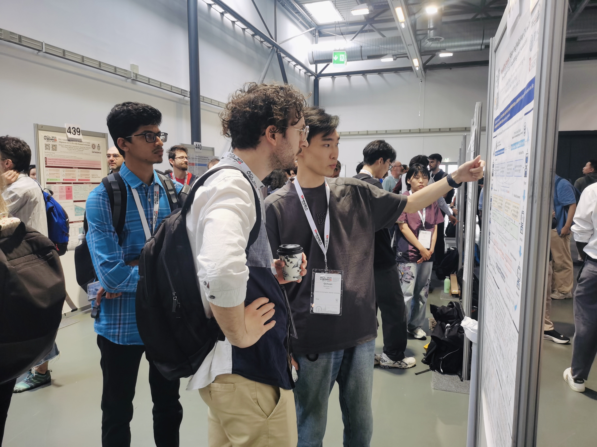
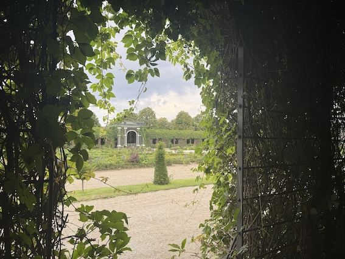

School of Informatics, Xiamen University
qcliu2001@stu.xmu.edu.cn
https://github.com/GenIRAG
Our paper was accepted by WWW'26!
🎉 GenIRAG Team's First Anniversary!
Our paper was accepted by ACL'25 (Main)!
I found the GenIRAG Team!


I am a first-year PhD student at Xiamen University, advised by Prof. Zhihong Zhang and Dr. Qinggang Zhang (The Hong Kong Polytechnic University). In 2023, I received a B.Mgt. from South-Central Minzu University. In 2024, I founded the GenIRAG Team and have close work with Chentao Zhang, Chenfeng Zheng, and Yuxuan Hu.
My research interests include Information Retrieval (IR), Retrieval-Augmented Generation (RAG) and Knowledge Graph (KG). Currently, my research topics is Trustworthy Retrieval-Augmented AI and Its Application.
Qichuan Liu, Chentao Zhang, Yuxuan Hu, Chenfeng Zheng, Qinggang Zhang, and Zhihong Zhang* · 2026
Qichuan Liu, Chentao Zhang, Chenfeng Zheng, Guosheng Hu, Xiaodong Li, and Zhihong Zhang*· 2025
Feilong Liao, Jianye Huang, Qichuan Liu*, Xinjie Peng, Bingqian Liu, Xinxin Wu, and Jian Qian· 2024
Jinxiong Zhao, Zhicheng Ma, Hong Zhao, Xun Zhang, Qichuan Liu, and Chentao Zhang*· 2024
Serve as a reviewer for CIKM'24.